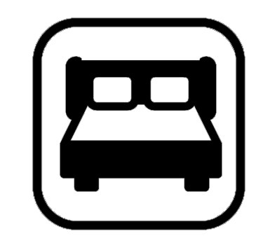

<ion-header >
  <ion-toolbar mode="md">
    <ion-title>My Messages</ion-title>
  </ion-toolbar>
</ion-header>

<ion-content class="ion-padding">

<div *ngFor="let item of chatlist" >
  <ion-card class="alert-card" *ngIf="item.receiverId && item.messageId !== null" >
    <ion-item lines="none" routerLink="../chat/{{item.receiverId.username}}" >
      <ion-avatar class="ionAvatar" item-start>
        
        
      </ion-avatar>
<ion-grid (click)="mark(item)">
  <ion-row>
    <ion-col col>
<h5 ion-text class="sender"> {{item.receiverId.username}} </h5>
    </ion-col>
    <ion-col col-auto>
      <span class="postTime" margin-left ion-text> {{TimeNow(item.messageId.message[item.messageId.message.length -1].date)}}</span>
    </ion-col>
  </ion-row>
</ion-grid>
<ion-grid class="msgGrid">
<ion-row  >
  <ion-col col>
    <span>
      <ion-icon name="checkmark-done-outline" class="read" *ngIf="item.messageId.message[item.messageId.message.length -1].isRead" ></ion-icon>
      {{item.messageId.message[item.messageId.message.length -1].body.substr(0,20)}}
    </span>
  </ion-col>
  <ion-col col-auto>
    <p class="msg" *ngIf="checklist(item.messageId.message,item.receiverId.username) > 0 " >
      {{checklist(item.messageId.message,item.receiverId.username)}}
    </p>

  </ion-col>
</ion-row>
</ion-grid>
    </ion-item>
  </ion-card>
</div>


</ion-content>

<ion-footer >
  <ion-segment [scrollable]="true" value="heart" mode="ios">
    <ion-segment-button value="home" routerLink="../principal">
      <ion-icon name="home-outline"></ion-icon>
    </ion-segment-button>
    <ion-segment-button  routerLink="../newadd">
      <ion-icon name="add-circle-outline"></ion-icon>
    </ion-segment-button>
    <ion-segment-button value="globe" routerLink="../search">
      <ion-icon name="arrow-back-outline"></ion-icon>
    </ion-segment-button>
    <ion-segment-button value="person" routerLink="../profile">
      <ion-icon name="person-outline"></ion-icon>
    </ion-segment-button>
  </ion-segment>
</ion-footer>
